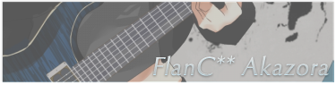
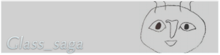

Team Pasra
Team Pasra
| Name | : FlanC** , akazora |
| Gender | : Male |
| Birthday | : 1994/10/5 |
| Egogram | : baaba |
"Pasraの独裁者" - by sora_h
"声だけはかっこいいよね" - by ???
"何をやらせても適正がある" - by chihirow
"声だけはかっこいいよね" - by ???
"何をやらせても適正がある" - by chihirow
| Name | : Shota Fukumori (sora_h) |
| Gender | : Male |
| Birthday | : 1997/2/4 |
| Egogram | : bcaac |
"世界最強のウザドヤ顔" - by akazora
"いつもいて、元気を貰える" - by chihirow
"大都会宇都宮で活躍するRubyist" - by Glass_saga
"いつもいて、元気を貰える" - by chihirow
"大都会宇都宮で活躍するRubyist" - by Glass_saga
| Name | : Pasta-K |
| Gender | : Male |
| Birthday | : 1993/09/15 |
"くねくねしてはるー！" - by moccai
"おかしいな…身長が伸びてない…" - by akazora
"とても活動的で輝いてる" - by chihirow
"おかしいな…身長が伸びてない…" - by akazora
"とても活動的で輝いてる" - by chihirow

| Name | : chihirow |
| Gender | : ??? |
| Birthday | : 1991/10/25 |
"可愛い女子大生。" - by akazora
"Pasra唯一の癒し" - by sora_h
"電子の妖精" - by Glass_saga
"Pasra唯一の癒し" - by sora_h
"電子の妖精" - by Glass_saga
| Name | : greyia |
| Gender | : Male |
| Birthday | : 1995/3/3 |
"（・ｗ・）" - by chihirow
"黒歴史保持条約" - by sora_h
"謎の生態" - by akazora
"黒歴史保持条約" - by sora_h
"謎の生態" - by akazora
| Name | : Glass_saga |
| Gender | : Male |
| Birthday | : 1991/9/14 |
| Egogram | : bcaba |
"糸柳さん予備軍。" - by chihirow
"そんなプレイで大丈夫か?" - by akazora
"奴は見捨てに定評があるからな。" - by sora_h
"そんなプレイで大丈夫か?" - by akazora
"奴は見捨てに定評があるからな。" - by sora_h